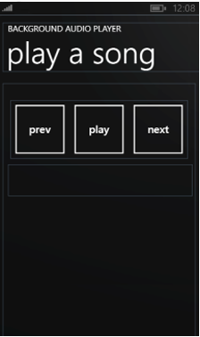

Windows phone 和windows应用商店应用中实现音频和视频播放
概述
微软为Windows phone应用和windows应用商店应用开发人员提供了音视频文件播放的支持，通过以下内容您能够充分的了解如何为Windows phone应用和windows应用商店应用添加音视频播放功能。我们首先简单介绍android 和ios中音视频播放功能的实现，然后详细介绍了如何在windows phone和Windows平台上实现音视频播放。
另外，后台播放音频文件是音视频播放应用中一项必不可少的功能，本文中同样介绍了windows phone和Windows平台上后台音频文件播放的实现。
实现音视频播放
Android中实现音视频播放
由于播放文件的来源可能为网络，首先确保应用开启网络访问功能：
以下为播放存在应用程序的res/raw/目录下的文件的示例：
MediaPlayer mediaPlayer = MediaPlayer.create(context, R.raw.sound_file_1);
mediaPlayer.start();IOS中实现音视频播放
Ios开发中常用AVAudioPlayer播放音频文件，AVAudioPlayer使用方法如下：
AVFoundation.framework的添加
#import h文件中AVAudioPlayer声明
#import
@interface ViewController : UIViewController{
AVAudioPlayer *audioPlayer;
} m文件中AVAudioPlayer实现
NSURL *url = [NSURL fileURLWithPath:[NSString stringWithFormat:@"%@/Numb.mp3",[[NSBundle mainBundle]resourcePath]]];
NSError *error;
audioPlayer = [[AVAudioPlayer alloc]initWithContentsOfURL:url error:&error];
audioPlayer.numberOfLoops=-1;
audioPlayer.currentTime =0;
audioPlayer.volume=0.5;
if(audioPlayer == nil){
NSLog(@"%@",[error description]);
}
else{
[audioPlayer prepareToPlay];
}
[audioPlayer play];
//[audioPlayer pause];
//[audioPlayer stop];Ios开发中常用MPMoviePlayerController播放视频文件，MPMoviePlayerController使用方法如下：
MediaPlayer.framework的添加
#import h文件中MPMoviePlayerController声明
#import
@interface MPAVControllerTest : UIViewController{
MPMoviePlayerController *moviePlayer;
} m文件中MPMoviePlayerController实现
NSString* path=[NSString stringWithFormat:@"%@/kenanhd491.mp4",[[NSBundle mainBundle]resourcePath]];
moviePlayer = [ [ MPMoviePlayerController alloc]initWithContentURL:[NSURL fileURLWithPath:path]];
moviePlayer.controlStyle = MPMovieControlStyleFullscreen;
moviePlayer.scalingMode = MPMovieScalingModeAspectFit;
[[moviePlayer view] setBounds:CGRectMake(0, 0, 320, 480)];
[[moviePlayer view] setCenter:CGPointMake([UIScreen mainScreen].bounds.size.width/2 , [UIScreen mainScreen].bounds.size.height/2)];
[[moviePlayer view] setTransform:CGAffineTransformMakeRotation(0)];
[self.view addSubview:moviePlayer.view];
[moviePlayer setFullscreen:YES animated:YES];
[ moviePlayer play ];
//[ moviePlayer stop ];
//[moviePlayer release];Windows phone 和windows应用商店应用中实现音频和视频播放
Windows phone和windows应用商店应用都通过MediaElement实现音频和视频播放，虽然在两个平台上对MediaElement接口的支持少有不同，但使用方法大部分相同，此处介绍利用MediaElement实现播放的方法，并指出两平台不同之处。
●步骤一：确保应用已开启网络访问功能
由于要播放的音视频文件可能来自网络，所以首先确保应用具有访问网络的功能。在Windows phone中通过修改WMAppManifest.xml文件为应用程序添加访问网络功能。windows应用商店应用中开启网络访问功能，需要修改 Package.appmanifest 文件。
●步骤二：创建一个 MediaElement 对象，并设置属性。
首先，通过使用 XAML 创建一个 MediaElement 对象并将 Source 设置为指向某个音频或视频文件的统一资源标识符 (URI) 将媒体添加到你的应用。以下代码创建一个 MediaElement，并将其 Source 属性设置为应用程序中附加的某个视频文件的 URI。当加载页面时，MediaElement开始播放。 要防止媒体立即启动，可以将 AutoPlay 属性设置为 false：
注意：在windows 8.1中提供了对内置传输控件的支持，可以通过将 AreTransportControlsEnabled属性设置为true来其用内置传输控件，代码如下：
●步骤三：为MediaElement 对象添加监听事件，并添加控制播放的按钮
在创建MediaElement之后，添加多个 Button 对象来控制媒体播放。MediaElement 侦听MediaOpened、MediaEnded 和 MediaFailed 事件。并且它将创建 UI 来处理 Play、Stop 和 Pause，xaml代码如下：
步骤四：定义MediaElement 事件以及控制按钮的处理程序
在对应的.cs文件中定义以上各事件的处理函数，代码如下所示：
void Play_Click(object sender, RoutedEventArgs e)
{
media.Play();
}
void Pause_Click(object sender, RoutedEventArgs e)
{
if (media.CanPause)
{
media.Pause();
}
}
void Stop_Click(object sender, RoutedEventArgs e)
{
media.Stop();
}
void Media_MediaFailed(object sender, ExceptionRoutedEventArgs e)
{
// Handle failed media event
}
void Media_MediaOpened(object sender, RoutedEventArgs e)
{
// Handle open media event
}
void Media_MediaEnded(object sender, RoutedEventArgs e)
{
// Handle media ended event
}后台播放音频文件的实现
后台播放音频文件是应用中常见的功能，我们首先介绍了在android和ios中的实现，然后详细介绍如何在windows phone和windlws平台上实现该功能。
Android中的后台音频播放
Android通过Service实现后台音频播放，与其他Service不同的是用户能够意识到该后台执行的Service存在，并有可能与其交互。Android通过将执行后台播放的Service转换为“前台任务”实现后台音频播放。如下展示了一个简单的示例：
String songName;
// assign the song name to songName
PendingIntent pi = PendingIntent.getActivity(getApplicationContext(), 0,
new Intent(getApplicationContext(), MainActivity.class),
PendingIntent.FLAG_UPDATE_CURRENT);
Notification notification = new Notification();
notification.tickerText = text;
notification.icon = R.drawable.play0;
notification.flags |= Notification.FLAG_ONGOING_EVENT;
notification.setLatestEventInfo(getApplicationContext(), "MusicPlayerSample",
"Playing: " + songName, pi);
startForeground(NOTIFICATION_ID, notification);你应该保持后台音频播放服务为“前台服务”。当不再需要时刻通过设置stopForeground()方法并传入true参数来进行释放。
IOS中的后台音频播放
如下简单介绍了在IOS中实现后台音频播放的方法：
1. 在Info.plist中，添加"Required background modes"键，其值设置是“App plays audio"
2. 在播放器播放音乐的代码所在处，添加如下两段代码
//添加后台播放代码：
AVAudioSession *session = [AVAudioSession sharedInstance];
[session setActive:YES error:nil];
[session setCategory:AVAudioSessionCategoryPlayback error:nil];
//以及设置app支持接受远程控制事件代码
[[UIApplication sharedApplication] beginReceivingRemoteControlEvents];
//用下列代码播放音乐，测试后台播放
AVAudioPlayer *player = [[AVAudioPlayer alloc] initWithContentsOfURL:url error:nil];
[url release];
[player prepareToPlay];
[player setVolume:1];
player.numberOfLoops = -1; //设置音乐播放次数 -1为一直循环
[player play]; //播放Windows phone中实现后台播放
若要播放后台音频，请在 Visual Studio 中使用 Windows Phone 的 Silverlight 项目模板创建一个“Windows Phone 音频播放代理”。然后，从您的应用程序中引用该后台代理。
创建 Windows Phone 后台音频应用程序
1. 通过选择“文件|新项目...”菜单命令创建一个新项目。
2. 将显示“新建项目”对话框。展开“Visual C#”模板，然后选择“Silverlight for Windows Phone”模板。
3. 选择“Windows Phone 应用程序”模板。根据需要填写“名称”，然后单击“确定”。
4. 选择 Windows Phone 8.0 作为目标版本，然后单击“确定”。
5. 在“解决方案资源管理器”中，右键单击“解决方案”节点，然后选择“添加 | 新项目...”。
6. 在“添加新项目”对话框中，单击“Windows Phone 音频播放代理”。
7. 根据需要填写“名称”，然后单击“确定”。
8. 现在，您的解决方案应该具有两个项目，即应用程序项目和后台代理项目。
9. 在“添加引用”对话框中，单击“项目”标签。选择我们之前创建的后台代理，然后单击“确定”。
添加音频文件
1. 在“解决方案资源管理器”中，右键单击应用程序项目，然后选择“添加 | 新文件夹”。将该文件夹命名为 Audio。
2. 右键单击您刚刚创建的 Audio 文件夹，然后从上下文菜单中选择“添加 | 现有项...”。
3. 在“添加现有项”对话框中，导航到“%PUBLIC%\Music\Sample Music”（通常为 C:\Users\Public\Music\Sample Music）并选择若干个音频文件。有关后台音频播放器支持的文件格式信息，请参阅支持的 Windows Phone 媒体编解码器。
4. 单击“添加”按钮。
5. 在“解决方案资源管理器”中，选择您刚刚在 Audio 目录中添加的所有音频文件。在“属性”窗格中，将“复制到输出目录”字段从“Do not copy”更改为“Copy if newer”。
创建 UI
界面xaml代码如下所示：
此xaml实现的界面如下图所示：

修改 UI 后面的代码
using System.Windows.Navigation;
using Microsoft.Phone.BackgroundAudio;2.然后添加以下按钮单击事件处理程序代码：
private void prevButton_Click(object sender, RoutedEventArgs e)
{
BackgroundAudioPlayer.Instance.SkipPrevious();
}
private void playButton_Click(object sender, RoutedEventArgs e)
{
if (PlayState.Playing == BackgroundAudioPlayer.Instance.PlayerState)
{
BackgroundAudioPlayer.Instance.Pause();
}
else
{
BackgroundAudioPlayer.Instance.Play();
}
}
private void nextButton_Click(object sender, RoutedEventArgs e)
{
BackgroundAudioPlayer.Instance.SkipNext();
}3.在 MainPage 类的构造函数中，添加 PlayStateChanged 事件的事件处理程序：
BackgroundAudioPlayer.Instance.PlayStateChanged += new EventHandler(Instance_PlayStateChanged);按照如下方式实现 Instance_PlayStateChanged 方法：
void Instance_PlayStateChanged(object sender, EventArgs e)
{
switch (BackgroundAudioPlayer.Instance.PlayerState)
{
case PlayState.Playing:
playButton.Content = "pause";
break;
case PlayState.Paused:
case PlayState.Stopped:
playButton.Content = "play";
break;
}
if (null != BackgroundAudioPlayer.Instance.Track)
{
txtCurrentTrack.Text = BackgroundAudioPlayer.Instance.Track.Title +
" by " +
BackgroundAudioPlayer.Instance.Track.Artist;
}
}4.由于该应用设计为在后台播放音频，因此在播放音频时用户可能会返回到该应用。用户界面应该通过进行相应地更新以反映播放的当前状态以及当前正在播放的曲目来显示此内容。若要在加载应用时更新 UI，请通过向 MainPage.xaml.cs 的 MainPage 类中添加以下代码来重写 OnNavigatedTo 虚拟方法：
protected override void OnNavigatedTo(NavigationEventArgs e)
{
if (PlayState.Playing == BackgroundAudioPlayer.Instance.PlayerState)
{
playButton.Content = "pause";
txtCurrentTrack.Text = BackgroundAudioPlayer.Instance.Track.Title +
" by " +
BackgroundAudioPlayer.Instance.Track.Artist;
}
else
{
playButton.Content = "play";
txtCurrentTrack.Text = "";
}
}5.由于BackgroundAudioPlayer 只能播放独立存储或远程 URI 中的文件。所以在 App 类中添加CopyToIsolatedStorage 方法，确保files 数组包含您添加到项目的音频文件的实际名称，并在 App 类的构造函数中添加对 CopyToIsolatedStorage 方法进行调用：
using System.IO.IsolatedStorage;
using System.Windows.Resources;
private void CopyToIsolatedStorage()
{
using (IsolatedStorageFile storage = IsolatedStorageFile.GetUserStoreForApplication())
{
string[] files = new string[] { "Kalimba.mp3", "Maid with the Flaxen Hair.mp3", "Sleep Away.mp3" };
foreach (var _fileName in files)
{
if (!storage.FileExists(_fileName))
{
string _filePath = "Audio/" + _fileName;
StreamResourceInfo resource = Application.GetResourceStream(new Uri(_filePath, UriKind.Relative));
using (IsolatedStorageFileStream file = storage.CreateFile(_fileName))
{
int chunkSize = 4096;
byte[] bytes = new byte[chunkSize];
int byteCount;
while ((byteCount = resource.Stream.Read(bytes, 0, chunkSize)) > 0)
{
file.Write(bytes, 0, byteCount);
}
}
}
}
}
}实现音频播放器代理
AudioPlayerAgent 是当用户切换到其他前台应用时继续在后台运行的应用的一部分，为实现后台播放，还必须实现音频播放代理。
1.在 AudioPlayer.cs 文件的 AudioPlayer 类中，在类作用域级别声明一个静态整数。该变量保留当前曲目编号：
static int currentTrackNumber = 0;2.向 AudioPlayer.cs 的 AudioPlayer 类中添加以下代码创建曲目的静态列表：
private static List _playList = new List
{
new AudioTrack(new Uri("Kalimba.mp3", UriKind.Relative),
"Kalimba",
"Mr. Scruff",
"Ninja Tuna",
null),
new AudioTrack(new Uri("Maid with the Flaxen Hair.mp3", UriKind.Relative),
"Maid with the Flaxen Hair",
"Richard Stoltzman",
"Fine Music, Vol. 1",
null),
new AudioTrack(new Uri("Sleep Away.mp3", UriKind.Relative),
"Sleep Away",
"Bob Acri",
"Bob Acri",
null),
// A remote URI
new AudioTrack(new Uri("http://traffic.libsyn.com/wpradio/WPRadio_29.mp3", UriKind.Absolute),
"Episode 29",
"Windows Phone Radio",
"Windows Phone Radio Podcast",
null)
}; 3.若要处理诸如单击“播放”、“下一个”和“上一个”按钮之类的用户操作，请向 AudioPlayer.cs 的AudioPlayer 类中添加以下三个方法：
private void PlayNextTrack(BackgroundAudioPlayer player)
{
if (++currentTrackNumber >= _playList.Count)
{
currentTrackNumber = 0;
}
PlayTrack(player);
}
private void PlayPreviousTrack(BackgroundAudioPlayer player)
{
if (--currentTrackNumber < 0)
{
currentTrackNumber = _playList.Count - 1;
}
PlayTrack(player);
}
private void PlayTrack(BackgroundAudioPlayer player)
{
// Sets the track to play. When the TrackReady state is received,
// playback begins from the OnPlayStateChanged handler.
player.Track = _playList[currentTrackNumber];
}4.若要处理播放状态更改，请向 OnPlayStateChanged 方法中添加以下 switch 语句，放在对NotifyComplete 的调用之前：
switch (playState)
{
case PlayState.TrackReady:
// The track to play is set in the PlayTrack method.
player.Play();
break;
case PlayState.TrackEnded:
PlayNextTrack(player);
break;
}5.若要处理用户操作，请向 OnUserAction 方法中添加以下 switch 语句，放在对 NotifyComplete 的调用之前：
switch (action)
{
case UserAction.Play:
PlayTrack(player);
break;
case UserAction.Pause:
player.Pause();
break;
case UserAction.SkipPrevious:
PlayPreviousTrack(player);
break;
case UserAction.SkipNext:
PlayNextTrack(player);
break;
}Windows应用商店应用中实现后台播放
在windows应用商店应用开发中要实现后台播放功能，您需要完成以下步骤：
必须显式声明你的应用将执行后台任务
1、 在 Microsoft Visual Studio 中打开应用的项目文件。
2、 在解决方案资源管理器中双击 Package.appmanifest 文件以打开 Package.appmanifest 对话框。
3、 单击“声明” 选项卡，然后从“可用声明” 下拉框中选择“后台任务”。
4、 单击“添加”，然后选中“音频”复选框。
5、 指定入口点。在大多数情况下，如果你的项目被命名为 Foo，则你将指定 Foo.App
创建MediaElement
创建一个 MediaElement 并将 AudioCategory 设置为 BackgroundCapableMedia
设置SystemMediaTransportControls
1.为MediaElement添加CurrentStateChanged事件
2.在后台代码中设置SystemMediaTransportControls，并添加MusicPlayer_CurrentStateChanged方法：
SystemMediaTransportControls systemControls;
void InitializeTransportControls()
{
// Hook up app to system transport controls.
systemControls = SystemMediaTransportControls.GetForCurrentView();
systemControls.ButtonPressed += SystemControls_ButtonPressed;
// Register to handle the following system transpot control buttons.
systemControls.IsPlayEnabled = true;
systemControls.IsPauseEnabled = true;
}
void MusicPlayer_CurrentStateChanged(object sender, RoutedEventArgs e)
{
switch (musicPlayer.CurrentState)
{
case MediaElementState.Playing:
systemControls.PlaybackStatus = MediaPlaybackStatus.Playing;
break;
case MediaElementState.Paused:
systemControls.PlaybackStatus = MediaPlaybackStatus.Paused;
break;
case MediaElementState.Stopped:
systemControls.PlaybackStatus = MediaPlaybackStatus.Stopped;
break;
case MediaElementState.Closed:
systemControls.PlaybackStatus = MediaPlaybackStatus.Closed;
break;
default:
break;
}
}3.处理 SystemMediaTransportControls.ButtonPressed 事件
void SystemControls_ButtonPressed(SystemMediaTransportControls sender,
SystemMediaTransportControlsButtonPressedEventArgs args)
{
switch (args.Button)
{
case SystemMediaTransportControlsButton.Play:
PlayMedia();
break;
case SystemMediaTransportControlsButton.Pause:
PauseMedia();
break;
default:
break;
}
}4.创建两个帮助程序方法来播放和暂停 MediaElement
async void PlayMedia()
{
await Dispatcher.RunAsync(Windows.UI.Core.CoreDispatcherPriority.Normal, () =>
{
musicPlayer.Play();
});
}
async void PauseMedia()
{
await Dispatcher.RunAsync(Windows.UI.Core.CoreDispatcherPriority.Normal, () =>
{
musicPlayer.Pause();
});
}另请参见
Windows应用商店应用开发快速入门：视频和音频
Windows应用商店应用如何在后台播放音频